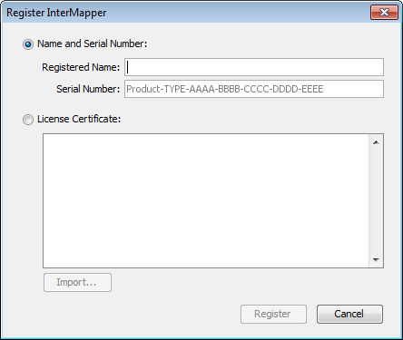
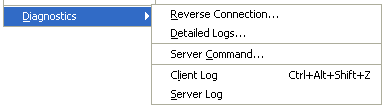
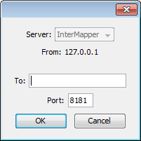
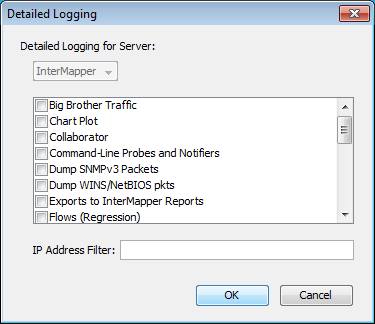
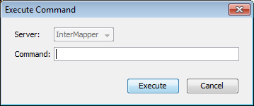

Use the Help menu to view the on-line help system.
| Menu Command | Description |
| About InterMapper |
Opens the InterMapper software information page. Note: On Macintosh, this command is available from the InterMapper or IM RemoteAccess menu. |
| Register InterMapper..., Register InterMapper RemoteAccess{} |
Opens the InterMapper or InterMapper RemoteAccess registration window. |
| InterMapper Help, InterMapper RemoteAccess Help |
Opens the InterMapper help system. |
| Send Feedback...{} | |
| Send a Screenshot...{} |
Opens the Send Feedback window with a screenshot attached. |
| Diagnostics (submenu){} |
Choose from a number of diagnostic commands, described below. |
Opens the InterMapper software information page. View information about the software and its contributors, as well as viewing information about memory use, platform, operating system and current Java version.

(InterMapper Only)
Opens the Register InterMapper (or InterMapper RemoteAccess) window. This is the same window displayed when you click Add... from the Registration pane, found in the Server Information section of the Server Settings window.

Use the diagnostics menu to create a Reverse Connection to a server for troubleshooting, to view Detailed Logs, to execute a server command, or to view the Client or Server log.

Use the Reverse Connection command to initiate a reverse connection from your InterMapper server to a copy of InterMapper RemoteAccess client for troubleshooting purposes. This is frequently used to allow tech support personnel to view a customer's server. Using a reverse connection, the customer can instruct their server to connect out to another InterMapper RemoteAccess without changing any firewall configurations.

Use the Detailed Logs command to toggle detailed logging for a variety of different InterMapper events. Choose the type of event for which you want detailed logging to be displayed. The detailed information is sent to the server's Debug Log file. Enter an IP address in the Filter field to limit the the logged information to a particular IP address.
When detailed logging is on, a significant quantity of data can be logged
in a relatively short period. To conserve server disk space, use this feature
only when needed for troubleshooting.

InterMapper RemoteAccess can instruct a server to execute certain commands, and to display the output in the Debug Log file. The major command is snmpwalk; it and other commands are described in the Developer Guide.
Use this command to open the Client Log window, which contains the messages sent between the client and the InterMapper server. This information can often be useful for debugging InterMapper problems.
Use this command to open the Debug log file for the server. It can also be opened from the Window>Logs>Debug menu.